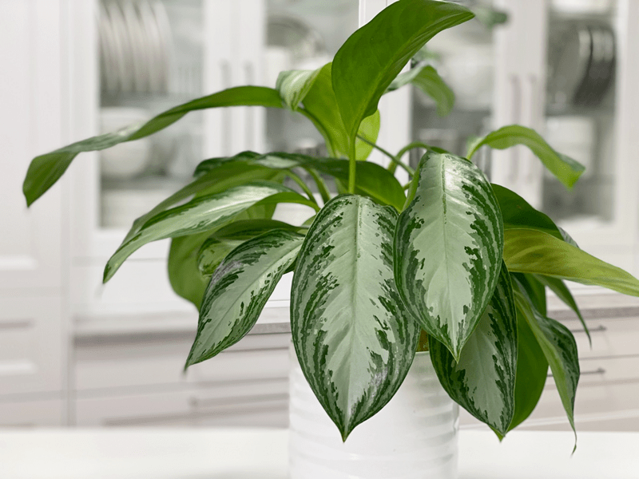
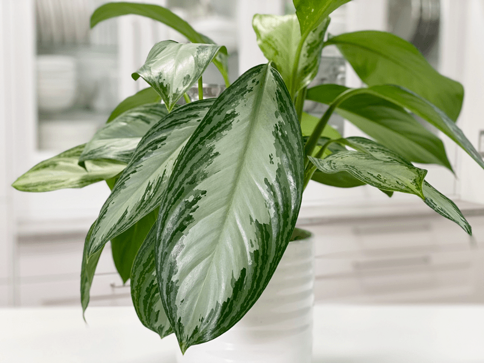
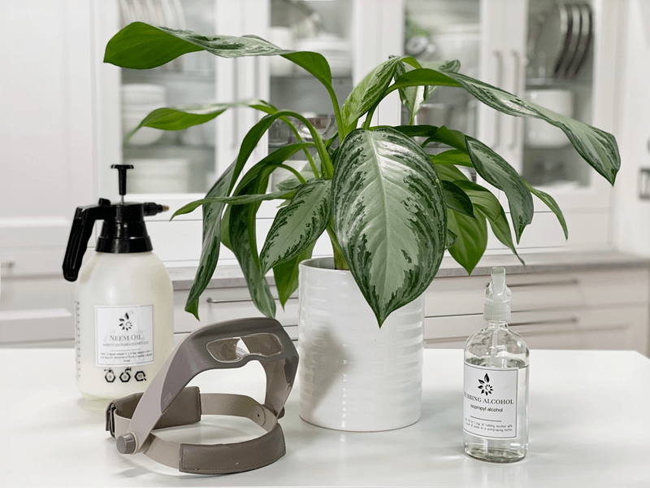
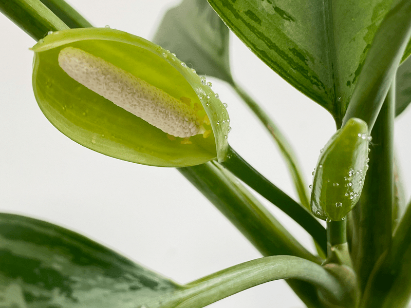

Aglaonema “Silver Bay” | Chinese Evergreen | Care Difficulty – Easy
The Aglaonema “Silver Bay” (Chinese evergreen) is a large, lush plant that’s a perfect addition to any office or room. They are versatile, ranging from large (floor plants) to small (perfect for tables or desktops). I fell in love with this plant variety from the get-go. The patterns that their leaves adorn leave me in awe–how does nature do that? They look so soft and matte.

The oval leaves unfurl from the center and grow outward to be around 9 to 12 inches long, while the whole plant can grow to about four feet tall. The stems and leaves are both semi-glossy, and the variegated leaves have different combinations of dark green to light green to silver colors.
Besides its beauty, it is known to clean the air of benzene (found in plastics, resins, synthetic fibers, dyes, detergents, etc.) as well as formaldehyde. Formaldehyde is a colorless chemical with a strong odor that is often used in manufacturing a variety of products, including wood products such as cabinets, furniture, plywood, particleboard, and laminate flooring. It is also used in permanent press fabrics (like those used for curtains and drapes or on furniture).
When I learn stuff like this, it helps justify my plant passion.
Water Requirements
To avoid overwatering your plant, let the soil get quite dry before completely drenching it again. Conversely, the plant will also suffer if the soil becomes too dry. The goal is to keep the soil slightly moist without overwatering. It is best to use pots with drainage, as root rot is not uncommon with these plants.
If it’s kept too wet, the leaves may start to turn yellow and drop off. If it’s kept REALLY wet, you might be at risk for root rot. I water mine about every one to two weeks, and even less in the winter.
If your plant is looking a bit droopy, that can be a sign that it needs a good watering, so be sure to check the soil. As with all houseplants, those kept in brighter light will need to be watered more often, and vice versa.
Light Requirements
Part of what makes Chinese evergreens so easy to care for is that they can thrive in bright, medium, or low light, as long as it’s indirect. During the growing season, expose them to more indirect (never direct) light to facilitate healthy, new leaves. I have my plant on a high up shelf in the living room, roughly 3 feet from a north-facing window. We don’t get direct light, and where I have it positioned, the light is filtered through a large Dracaena plant.
Temperature Requirements
These beauties enjoy temperatures anywhere between 60-85 degrees (F). If the temperature drops below 50 degrees (F), the plant will stop growing.

Fertilizer – Plant Food
During the growing season (spring-fall), feed the plant with a half-strength complete liquid fertilizer. If you live in a four-season climate, don’t feed them in the winter, because most plants go dormant in the colder months.
Additional Care
- Remove any dead, discolored, damaged, or diseased leaves and stems as they occur with clean, sharp scissors.
- Clean the leaves often enough to keep dust off. You can wipe the plant down regularly with rubbing alcohol solution (1-1 ratio) or a neem oil solution to deter insects.
- Lower leaf loss is common as your plant acclimates to its new home. Simply cut the lower leaves down at the base of the plant.
Plant Characteristics to Watch For
Diagnosing what is going wrong with your plant is going to take a little detective work, but even more patience! First of all, don’t panic, and don’t throw out a plant prematurely. Take a few deep breaths and work down the list of possible issues. Below, I am going to share some typical symptoms that can arise. When I start to spot troubling signs on a plant, I take it into a room with good lighting, pull out my magnifiers, and start by thoroughly inspecting the plant.

My plant is developing yellow leaves.
- If you notice your plant leaves are yellowing and dropping off the bottom, the plant is likely consuming too much water. The plant may be suffering from root rot.
- Solution: Use planting pots with drainage holes to allow excess water to drain through when watering. Slow down on the watering, allowing it to dry out some between waterings. There are a few different ways to tell if your Chinese evergreen is consuming too much water.
My plant has brown tips and edges along with the leaves are brown.
- If the leaves develop brown tips or edges, the air may be too dry. Another possibility is that the leaves are burnt from too much direct sun.
- Solution: Relocate the Chinese evergreen to a more humid spot, grouping it with other houseplants (which release moisture into the air as they breathe), or add a room humidifier. The goal should be to have a 60 percent humidity level throughout the year. If humidity isn’t the issue, check the location of the plant and see if it receives any direct sunlight; if so, relocate.
My plant is bushier on one side than the other.
- Uneven growth can be caused by just one side of the plant receiving light.
- Solution: Rotate the houseplant regularly to provide adequate light to all sides and prevent it from reaching toward the light on one side.
Brown leaves are forming at the base of the plant.
- Browning of the bottom leaves is typical.
- Solution: Snip them off to keep the plant tidy.
Common Bugs to Watch For
If you want to have healthy houseplants, you MUST inspect them regularly. Every time I water a plant, I give it a quick look-over. Bugs/insects feeding on your plants reduces the plant sap and redirects nutrients from leaves. Some chew on the leaves, leaving holes in the leaves. Also watch for wilting or yellowing, distorted, or speckled leaves. They can quickly get out of hand and spread to your other plants.
IF you see ONE bug, trust me, there are more. So, take action right away. Some are brave enough to show their “faces” by hanging out on stems in plan sight. Others tend to hide out in the darnedest of places, like the crotch of a plant or in a leaf that has yet to unfurl.
-

-
Mealybugs
-

-
Scales
-

-
Spider mites
-

-
Aphids
- Mealybugs look like small balls of cotton. They can travel, slooooooowly, but they have a strong will and determination! Though they are slow-moving, if any plant is touching another, there is a chance the mealybug will hitch a ride on a new leaf and spread. They breed like rabbits of the insect world. Females can deposit around 600 eggs in loose cottony masses, often on the underside of leaves or along stems.
- Scales are dark-colored bumps that are primarily immobile insects that stick themselves to stems and leaves. They are rather inconspicuous and don’t look like a typical insect. They can range in color but are most often brownish in appearance. They’re called “scales” primarily due to their scale-like appearance on a plant, due to waxy or armored coverings. They are often seen in clumps along a stem, sucking away at the plant’s juices with their spiky mouthpart.
- Aphids are more commonly seen if you place your plants outdoors. Aphids are indeed bugs. They are tiny insects that, along with black, also come in shades of yellow, green, brown, and pink. They are often found on the undersides of leaves.
- Spider mites are more common on houseplants. They are not insects – they are related to spiders. These appear to be tiny black or red moving dots. Spider mites are nearly invisible to the naked eye. You often need a magnifying lens to spot them, or you may just notice a reddish film across the bottom of the leaves, some webbing, or even some leaf damage, which usually results in reddish-brown spots on the leaf.

I spied this precious flower bud on July 7th, 2020.
Once Upon a Rare Moment…
Once upon a rare moment, this plant will occasionally produce buds that are 5 inches long, and they will bloom only in perfect conditions. Most plant owners remove the buds when they appear, as they are a waste of the plant’s energy. Not me–I embrace the full beauty of each plant and all that it has to offer. Should you decide to remove the buds, be sure to wash your hands thoroughly afterward, due to the sap’s toxicity.
Toxicity
This plant is toxic if ingested and may cause skin irritation, so it is best to keep away from pets and small children. If you think your pet may have ingested it, call the Animal Poison Control Center at 888.426.4435.
© AmieSue.com